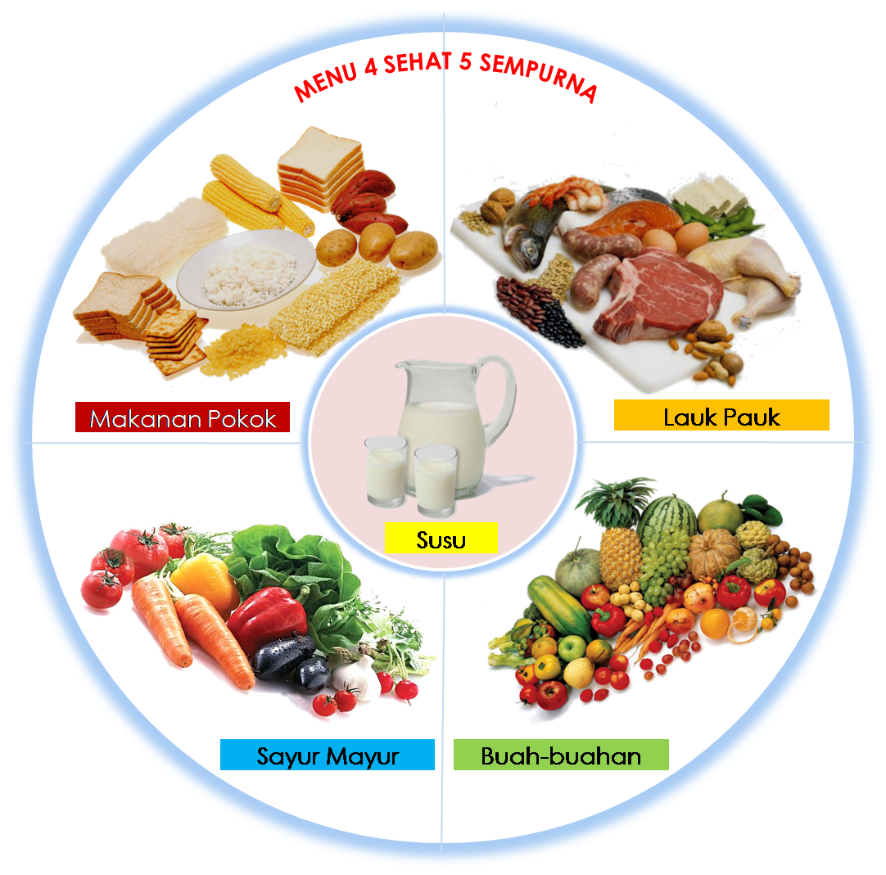

Kesehatan | Rabu, 7 Oktober 2026

Piring dengan nasi, lauk, sayur, buah, dan susu menjadi contoh menu bergizi seimbang. (Sumber : Flyer MPKU – RSA Bojonegoro)
Banyak orang mengira makan sehat itu rumit dan mahal. Padahal, kuncinya sederhana: pastikan setiap piring berisi beragam jenis makanan dalam porsi yang pas. Pola ini dikenal dengan istilah makan bergizi seimbang.
Cara paling mudah adalah membagi isi piring. Sebagian besar piring sebaiknya diisi sayur dan buah, sisanya makanan pokok dan lauk pauk. Dengan begitu, tubuh mendapat kebutuhan zat gizi yang beragam dalam sekali makan.
Selain itu, batasi makanan yang terlalu manis, asin, dan berminyak, serta biasakan minum air putih yang cukup setiap hari. Jangan lupa mencuci tangan sebelum makan dan memilih makanan yang bersih.
Tidak perlu mengubah pola makan sekaligus. Mulailah dengan menambah satu porsi sayur di setiap makan siang, atau mengganti camilan manis dengan buah. Kebiasaan kecil yang dilakukan terus-menerus akan membawa dampak besar bagi kesehatan.